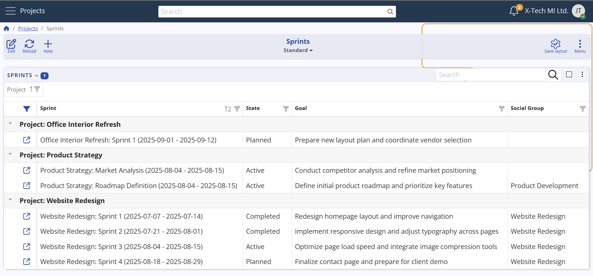
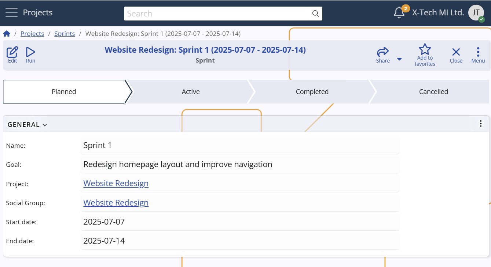

Sprints
A Sprint in Agile PM represents a fixed timebox (typically 1–4 weeks) during which a team works to complete a set of Cases toward a defined sprint goal. Sprints provide short, iterative cycles that support planning, progress tracking, and continuous delivery.
They are used to:
- Focus teams on a clear and achievable short-term goal.
- Track velocity and predict delivery capacity over time.
- Provide checkpoints for review, feedback, and adaptation.

Scope and constraints
- Each Sprint belongs to a single Project, and may optionally be linked to a Social Group (team).
- Only one active Sprint is allowed per Project and Social Group combination, preventing overlap in execution.
- Cases can be assigned to exactly one Sprint at a time; if not assigned, they remain in the backlog.
Configuration path: Sprint definition → General panel
Display panel name: General
System panel name: Sprint

Difference from Milestones
Sprints focus on driving work forward within short, fixed cycles,
While Milestones mark important checkpoints or delivery targets on the broader project timeline.
For example:
A Website Redesign project might define a sprint dedicated to updating the homepage layout and navigation.
At the same time, a Product Development project could run a sprint focused on implementing a new API module.
Each sprint has its own start and end dates, goal, and progress tracking, while still aligning with the broader project milestones.